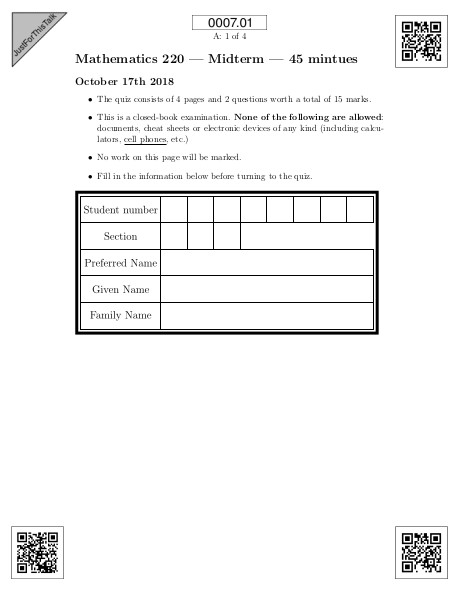
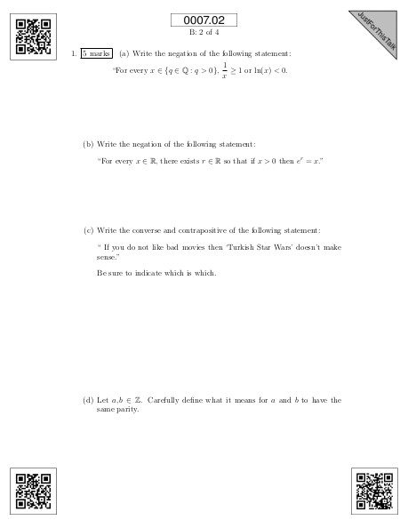
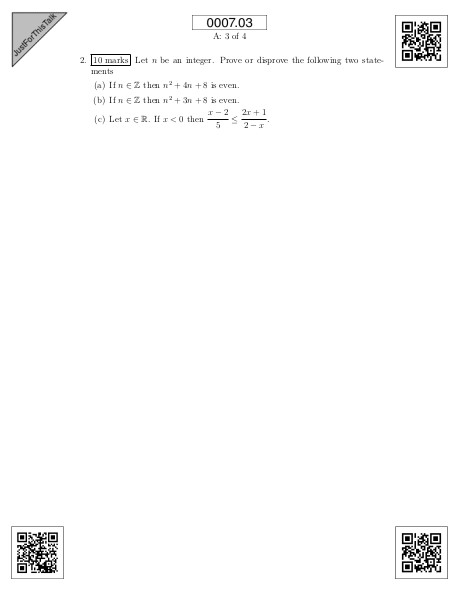
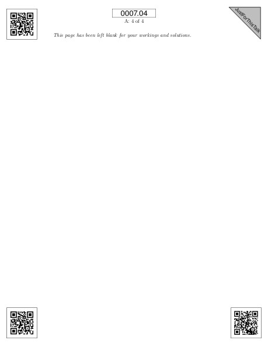

| Dryden Wiebe | Vala Vakillian | Victoria Schuster |
|---|
| Andrew Rechnitzer | Colin Macdonald |
|---|---|
| www.plomgrading.org | gitlab.com/plom/plom |
# git log --format="%aN" | sort -u 5584 commits, 25537 lines of Python
Andreas Buttenschoen
Andrew Rechnitzer
Colin B. Macdonald Many thanks to the students (*)
(*) Dryden Wiebe who have contributed!
(*) Elvis Cai
Elyse Yeager
(*) Forest Kobayashi
Jenny Li
John Hsu
Kevin Macdonald Special notice:
Matthew Coles CTLT Small TLEF
Michael Zhang Noureddine Elouazizi
Omer Angel Clarence Ho
(*) Peter Lee The Ha, et al @ Math IT
(*) Vala Vakilian Sathish Gopalakrishnan
(*) Victoria Schuster Eric Cytrynbaum
Vinayak Vatsal
Andrew, more standard python)
# git log --format="%aN" | sort -u 321 commits, 7421 lines of Python)
Andrew Rechnitzer
Colin B. Macdonald (*) student contributors
(*) Elvis Cai
|  |  |  |  |
# git log --format="%aN" | sort -u 1860 commits, 15970 lines of Python
Andrew Rechnitzer
Colin B. Macdonald (*) students
(*) Elvis Cai
Elyse Yeager
John Hsu
Matthew Coles
Omer Angel
Vinayak Vatsal
| www.plomgrading.org | gitlab.com/plom/plom |